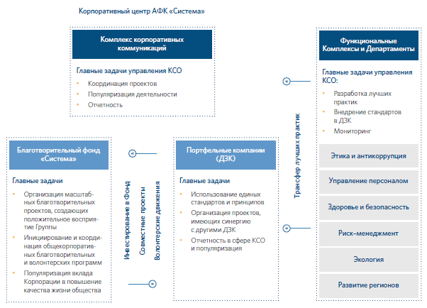
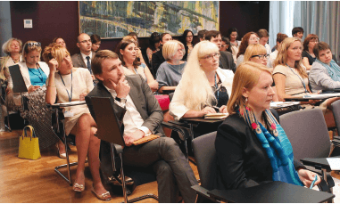
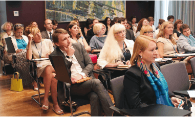
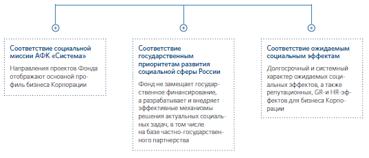

1.9. Управление корпоративной социальной ответственностью
В 2015 году АФК «Система» актуализировала корпоративные политики в сфере КСО и благотворительности . Новая редакция документов отражает прогресс в части развития системы корпоративного управления и антикоррупционных процедур. Также была проведена работа по совершенствованию нормативной базы БФ «Система»: разработаны и внедрены регламенты работы Фонда в соответствии с корпоративными стандартами АФК «Система»: антикоррупционная политика, положение о расходовании средств, о мерах по урегулированию конфликта интересов, уточнены регламенты работы органов управления.
Ежегодно Совет директоров АФК «Система» рассматривает стратегию в области КСО и благотворительности и отчет о результатах работы в области КСО и благотворительности, а также утверждает приоритетные направления и ключевые показатели эффективности (КПЭ).
Общекорпоративные КПЭ в сфере КСО, установленные на уровне Корпорации в 2015 году
| Уровень корпоративного волонтерства |
| Доля участников добровольческой деятельности среди персонала (в среднем по Группе компаний) |
| Проекты Shared Value |
| Число социальных проектов, основанных на подходе создания общих ценностей, приносящих пользу обществу и бизнесу |
| Социальная отчетность |
| Число ДЗК, имеющих нефинансовую отчетность по стандарту GRI |
| Развитие территорий |
| Число договоров о социально-экономическом сотрудничестве с новыми регионами |
| Трансляция КСО в СМИ |
| Количество публикаций, посвященных КСО и благотворительным проектам Группы |
При этом в рамках каждой социальной или благотворительной программы или проекта исходя из поставленных целей и задач определяются и измеряются свои специфические показатели эффективности. Набор проектных КПЭ, как правило, включает как количественные (число проведенных мероприятий, благополучателей, привлеченных социальных партнеров, объем собранных средств и других видов помощи, количество отработанных волонтерами часов и т. п.), так и качественные параметры (в первую очередь востребованность и возможность тиражирования лучших практик на федеральном уровне).
Структура управления КСО и благотворительной деятельностью в Корпорации
Комплекс корпоративных коммуникаций АФК «Система» курирует вопросы КСО, благотворительности и нефинансовой отчетности, отвечает за взаимодействие с БФ «Система», координирует деятельность дочерних компаний в этой области и информационное сопровождение социальных проектов.
В компаниях Группы существуют профильные подразделения либо выделенные сотрудники, ответственные за взаимодействие с АФК «Система» и БФ «Система» по общекорпоративным программам и за реализацию собственных социальных, благотворительных и волонтерских проектов.
«КСО – основа устойчивого развития бизнеса»
 
15–16 июля 2015 года АФК «Система» совместно с МТС впервые провела в Москве семинар на тему «КСО – основа устойчивого развития бизнеса», направленный на совершенствование деятельности Корпорации в области устойчивого развития, укрепление интеграции между дочерними компаниями, внедрение лучших практик нефинансовой отчетности, КСО и повышение эффективности социальных инвестиций. На семинаре присутствовали 50 представителей дочерних компаний Группы АФК «Система».

15–16 июля 2015 года АФК «Система» совместно с МТС впервые провела в Москве семинар на тему «КСО – основа устойчивого развития бизнеса», направленный на совершенствование деятельности Корпорации в области устойчивого развития, укрепление интеграции между дочерними компаниями, внедрение лучших практик нефинансовой отчетности, КСО и повышение эффективности социальных инвестиций. На семинаре присутствовали 50 представителей дочерних компаний Группы АФК «Система».
Открывая мероприятие, вице-президент – руководитель Комплекса корпоративных коммуникаций АФК «Система» Евгений Чуйков сформулировал ключевые задачи и стратегические приоритеты Корпорации в области КСО:
- повышение прозрачности и внедрение единых принципов нефинансовой отчетности на базе стандарта Global Reporting Initiative;
- активное участие в развитии регионов присутствия Корпорации;
- увеличение числа социальных проектов, основанных на подходе создания общих ценностей (Shared Value);
- поддержка талантов, науки, образования и инноваций.
Также в ходе семинара были представлены результаты КСО-аудита, проведенного в Корпорации весной 2015 года, и отмечены лучшие социальные проекты ДЗК: «Книга памяти» (МТС), «Забота о ветеранах» («Медси»), акция «Участвуйте!» и «Операция «Игрушки» («Детский мир»), «Безопасное детство» (БЭСК), повышение финансовой грамотности (МТС-Банк).
Вице-президент по управлению персоналом МТС Михаил Архипов поделился передовым опытом внедрения международных стандартов в сфере КСО: Группа МТС стала одной из первых компаний в России, которая провела самооценку бизнес-процессов по стандарту ISO 26000.
Представители РСПП, Высшей школы маркетинга и развития бизнеса НИУ ВШЭ, агентства корпоративного развития «Да-Стратегия», компании EY и другие приглашенные эксперты рассказали о последних мировых и российских тенденциях нефинансовой отчетности, КСО, синергии КСО и бизнеса и основных инструментах оценки социальных проектов. Проведение подобных мероприятий в Корпорации планируется в дальнейшем на регулярной основе.
Благотворительная деятельность является одной из важнейших составляющих корпоративной социальной ответственности АФК «Система» и, в соответствии с общей стратегией бизнеса, развивается в концепции «социального инвестирования» – целенаправленной долгосрочной социальной политики, сочетающей в себе стратегические задачи устойчивого развития Корпорации, интересы ее акционеров и последовательный вклад в развитие общества.
В управлении социальными инвестициями АФК «Система» исходит из лучшего мирового и российского опыта, предполагающего одновременное наличие как программ КСО, так и корпоративного благотворительного фонда с самостоятельным менеджментом и развитой экспертизой по стратегическим направлениям деятельности. Эта модель реализована и в АФК «Система», а также в ряде ДЗК, имеющих свои собственные благотворительные фонды: БФ «Детский мир», БФ «Милосердие» (ПАО «Микрон»), Благотворительный фонд поддержки ветеранов Сегежского ЦБК (Segezha Group).
В 2015 году продолжилась трансформация структуры и деятельности БФ «Система» в соответствии с бизнес-моделью АФК «Система» как инвестиционной компании – переход от корпоративной филантропии к социальным инвестициям с четкими целями и измеримыми результатами. Фонд разрабатывает стратегию социального инвестирования, планирует масштабные общекорпоративные программы, аккумулирует необходимые средства, формирует портфель благотворительных проектов и реализует их.
Органами управления и контроля БФ «Система» являются:
- Попечительский Совет БФ «Система» – высший орган управления Фонда;
- Правление БФ «Система» – коллективный орган управления деятельностью во главе с Президентом Фонда.
Главные цели своей благотворительной деятельности АФК «Система» видит в содействии развитию интеллектуального потенциала страны через поддержку образования, науки и талантливой молодежи; формировании гармоничного общества через поддержку социально незащищенных слоев населения и местных сообществ; сохранении и популяризации культурного наследия России через внедрение новых технологий.
Принципы благотворительной деятельности БФ «Система»
Финансирование социальной и благотворительной деятельности в 2015 году
Для реализации социальных программ БФ «Система» и компании Группы АФК «Система» используют широкий спектр инструментов как финансовой (целевые пожертвования, гранты, фандрайзинг), так и нефинансовой (волонтерство, pro bono ) благотворительности, что позволяет достигать максимального эффекта при оптимальном уровне затрат.
Решениями Правления и Совета директоров АФК «Система» для ДЗК рекомендован объем целевого финансирования благотворительной деятельности в размере до 0,65 % от чистой прибыли предыдущего года. Выделенные средства распределяются между:
- самостоятельными благотворительными проектами каждого ДЗК;
- общекорпоративной программой БФ «Система», включая как реализацию общекорпоративных проектов федерального уровня, так и реализацию целевых проектов в интересах ДЗК.
Консолидированный бюджет АФК «Система» на благотворительность
В 2015 году совокупный объем социальных инвестиций Корпорации с учетом расходов дочерних компаний АФК «Система» достиг порядка 1,35 млрд руб., что составило 0,19 % от выручки против 0,14 % в 2014 году. При росте консолидированной выручки Корпорации на 9,7 % социальные инвестиции Группы увеличились в 1,5 раза год к году. Значительный рост отчислений на благотворительность соответствует глобальной тенденции: по сравнению с 2014 годом объем пожертвований в мире вырос на 10 % . В 2015 году совокупный бюджет благотворительных фондов в России увеличился на 39 % по сравнению с предыдущим годом (с 6,77 до 9,38 млрд руб.). БФ «Система» сохранил долю вклада в российскую благотворительность на уровне приблизительно 6 % от общего объема сектора в денежном выражении и повысил с 23 до 26 % долю в совокупном объеме финансирования корпоративных фондов .
Инвестиции в благотворительные и социальные программы, млн руб.
| Наименование | 2013 | 2014 | 2015 |
|---|---|---|---|
| БФ «Система» | 1 400 | 340,7 | 542,7 |
| ДЗК (без учета отчислений в БФ «Система») | 425 | 547,7 | 807,3 |
| Итого | 1825 | 925,2 | 1350 |
Структура финансирования проектов БФ «Система» в 2015 году, %

Общие инвестиции в благотворительные и социальные программы в разбивке по ДЗК, %
Структура расходов ДЗК АФК «Система» на благотворительные и социальные программы в 2015 году, %

Направления благотворительной деятельности БФ «Система»

«Если вплоть до 2015 года Фонд реализовывал множество социальных и благотворительных программ в самых разных социальных сферах, то начиная с 2016 года наша задача – оставить 2–3 ключевых направления деятельности и сконцентрировать все усилия и ресурсы именно на них. Это очень важно, потому что каждый фонд, работающий в России, сталкивается с большим количеством разнообразных запросов и обращений за помощью. Для того чтобы делать действительно системные социальные программы с долгосрочным эффектом, нам необходимо сфокусировать свою деятельность на нескольких актуальных направлениях, в которых мы будем лидерами и главными экспертами в России».
Елена Чернышкова
Президент БФ «Система»
С конца 2015 года БФ «Система» сконцентрировал программу деятельности на реализации системообразующих проектов, актуальных как для Корпорации, так и для развития российской экономики и социальной сферы:

Программа «Лифт в будущее – таланты для наукоемких отраслей»
Создание на платформе всероссийской программы «Лифт в будущее» базы для формирования молодежного кадрового резерва АФК «Система» и высокотехнологичных отраслей через поддержку, образование и профессиональную ориентацию талантливой молодежи со школьного возраста до уровня молодых специалистов.

Программа «Социальные проекты и волонтерство»
Комплекс мероприятий в сфере социальной поддержки ветеранов и незащищенных слоев населения в рамках соглашения между АФК «Система», Правительством Москвы и Московским городским советом ветеранов в области социальной поддержки ветеранов, членов их семей и патриотического воспитания молодежи.
Развитие волонтерского центра БФ «Система» как центра консолидации лучших в России практик организации добровольческой деятельности.

Программа «Культура и искусство: меценатство и новые технологии»
Поддержка программ в сфере культуры, искусства и образования с фокусом на новые модели и современные технологические решения.
Планы на 2016 год
2. Реструктуризация портфеля благотворительных программ со стратегическим фокусом на проектах и мероприятиях, обеспечивающих максимальный социальный и репутационный эффект для Корпорации.
3. Усиление комплементарного взаимодействия Фонда с АФК «Система» и ДЗК.
4. Разработка/актуализация стратегий в сфере КСО в ДЗК, в том числе. в новых активах, в соответствии с общекорпоративными приоритетами и спецификой бизнеса портфельных компаний.
5. Внедрение политик в сфере КСО, благотворительности и экологии в ДЗК по корпоративным стандартам.
6. Развитие флагманской программы «Лифт в будущее» и повышение ее результативности.
7. Расширение социальной программы поддержки ветеранов.
8. Расширение социального партнерства со стратегическими регионами присутствия Группы.
9. Масштабирование корпоративного волонтерства на национальный уровень.
10. Запуск новых социально значимых инициатив, в том числе в экологической сфере.
11. Повышение прозрачности в сфере КСО: выпуск отчетов об устойчивом развитии АФК «Система» и ключевых портфельных компаний по стандарту GRI.
12. Расширение информационного партнерства по социальным проектам.